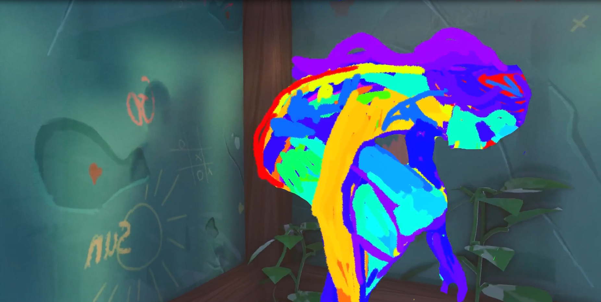
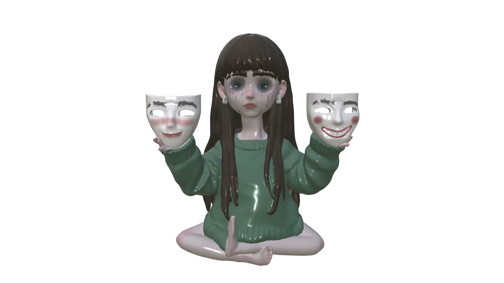
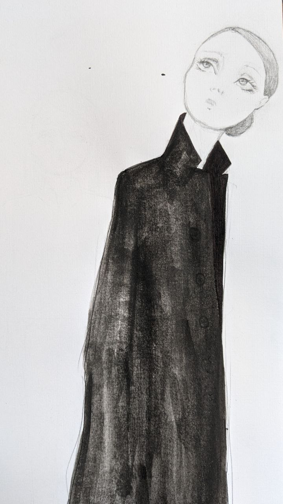

Artists Works.
 +
+
This project is about a world that is completely destroyed, where nothing is left. It takes place after the end of time itself, in a place where the line between the real world and the world of dreams does not matter anymore. Everything is in ruins, everyone is gone, and the history of humanity has been erased.
Standing right between reality and a dream, the main character exists as a bridge between the absolute end and a new beginning. She is at the exact point where the past meets the future. Acting as our guide through this empty world, she walks this thin line to light a new spark — the fire of life and existence.
This fire starts our story from the beginning. Instead of moving forward into the dark, this spark turns time into a big circle and throws us back into normal, everyday life. The story resets under a bright sun and a blue sky, back to the time when the world was still safe. This shows the main idea of the project — time does not move in a straight line. It is a circle where the end of everything is just the beginning of a new story.


 +
+
Yielding is a psychological manifestation that often remains within the personal sphere and, as a result, is rarely discussed. This work serves as a catalyst for dialogue and reflection. The fact that the visual reference is the road sign of the same name also allows for an exploration of the dogmatic aspect of yielding.
 +
+
Portrait carpet weaving, which flourished during the Soviet period and became widespread across many countries of the Soviet Union, including Armenia, has historically functioned as a monumental and ideological medium. Within this tradition, a clear patriarchal logic prevailed: men were represented as individualized subjects within heroic narratives—military leaders, political figures, and cultural icons—while women were either stripped of individuality and transformed into collective allegories of grief and loss (such as “Mother Armenia”) or left in the shadows of history.
The greatest paradox lies in the fact that these heroic male portraits were, for months at a time, woven largely by anonymous women through their own physical labor, dedicating their energy to the perpetuation of male dominance.
Through this project, I, as a woman artist, seek to dismantle this hierarchy of patriarchal historiography. The work is built upon an ordinary household sieve. Here, the sieve functions as a filter of time and ideas—a device that, for centuries, has “sifted out” women’s names and stories from historical narratives.
Using authentic traditional carpet-making techniques (hand-tied knots) on a metal mesh surface, I appropriate the structure of the classic portrait carpet, preserving its background and ornamental frame while removing the hero himself. In place of the male figure, the viewer is confronted with absence: the dense, cold grid of the sieve.
Through this gesture, I not only reject the pedestal upon which the male hero has been placed, but also reclaim and reinterpret the very function of the sieve itself. This domestic object, traditionally associated with women’s confinement within the passive space of the kitchen, becomes in my hands an active tool directed against the very system that assigned it that symbolic meaning.
I am no longer the anonymous woman silently reproducing a male-centered history. I am the artist who occupies and commands the textile space, deciding for herself who remains within history—and who is sifted out of it.
 +
+
This work is a map of my inner world, composed of different layers of my identity and personal symbols. The transparent figures represent characters that have accompanied me through various stages of life, while each object is connected to specific memories, emotions, and experiences. Together, they form a personal system through which I explore themes of identity, connection, protection, and inner balance.
Speaking about my inner world, and especially opening it up to others, is a deeply hard process. I am constantly changing, yet there are certain core elements within me that remain untouched, helping me find my way back to my true center.
This work is built entirely around those enduring pieces of myself. The transparent figures represent the different layers of my identity — characters that have accompanied me through various stages of life. At the very center is the representation of how I perceive myself.
Every object here carries a deeply personal meaning for me. The thread symbolizes my need for connection, protection, and comfort, while the spiky spheres act as the inseparable anti-stress objects from my daily life, and the beaded string represents my search for inner balance and tranquility.
From the outside, these figures may appear abstract or even random, but each one is intimately tied to my memories, emotions, and experiences. Together, they form a map of my inner world — a small, personal system I always return to, regardless of time, place, or the stage of life I am in.
Through this work, I am opening a window into my private world, sharing the very symbols that have shaped both my identity and my artistic language.

+These two sculptures represent different stages of the same emotional journey.
Naive portrays a child holding a heart like a lollipop. It symbolizes the openness, trust, and unconditional love that children naturally carry. At first, the heart is pure and offered freely to the world. Yet, like a lollipop held for too long, it slowly gathers dust, dirt, fingerprints, and invisible traces of every encounter. These layers become a metaphor for experiences, expectations, disappointments, and childhood wounds. Over time, the heart becomes fragile, worn, and difficult to hold in the same innocent way. To protect it from completely falling apart, the child eventually puts it away.
Faceless represents what comes after. The figure holds two smiling masks, each concealing a deeper emotional reality. It is a self-portrait shaped by the transition from childhood into adulthood. As the world asks for stability, composure, and acceptability, genuine emotions are gradually hidden behind carefully constructed expressions. The masks symbolize the roles we learn to perform in order to meet expectations, while the tears reveal the feelings that remain underneath.
Together, the works describe a transformation: a child who once carried their heart openly eventually learns to protect it, replacing vulnerability with masks. The innocence is not lost, but hidden. What remains is the ongoing tension between who we truly are and who the world expects us to be.

 +
+
This work explores the invisible inheritance passed between generations of women—not through objects or traditions, but through fear, silence, and survival strategies. Set between memory and reality, the narrative follows a woman returning to the landscape of her childhood, where personal memories gradually reveal the deeper structures that shaped them.
At the center of the work is the realization that fear is not created by a single event, person, or place. Rather, it emerges from ordinary social systems that quietly define who is allowed comfort, freedom, and visibility. Through recurring symbols—the fan, the veil, the snake, the kitchen, and childhood toys—the work examines how gender roles become embedded in everyday life and how children learn these hierarchies long before they can name them.
The mother becomes a symbol of inherited resilience: a woman who carries both love and constraint, protection and submission. As the protagonist begins to understand her mother's experience, she recognizes that what has been passed down is not weakness but a method of survival within a system that demands silence.
Moving between dream, memory, and reality, the work reflects on how personal trauma can transform collective structures into intimate emotional landscapes. Ultimately, it asks how inherited fear shapes identity, and whether it is possible to break cycles that have existed for generations.

+I'm always inspired by women around me and interested in how other women live their own unique lives. How they perceive their own bodies and how being a woman affects their daily life, in a world which wasn't designed with them in mind.

People are different—not only from one another, but also within themselves. Different shadows live within us—some good, some dark, and some still undiscovered. Every person, phenomenon, or event reveals yet another “self,” and sometimes the hardest part is enduring this diversity within ourselves.
How many “selves” have you already recognized within yourself? At what stage of self-discovery are you? How many people are inside you, and how many have you not yet met? Are you at peace with yourself, or are you still struggling with various aspects of your identity?
 +
+
The animation explores the journey of life as something deeply rooted in memory, ancestry, and the unseen parts of ourselves. Inspired by the idea that “if you forget your ancestors, you lose your shadow,” the project reflects on how our identity is shaped by those who came before us — through inherited stories, archetypes, and memory.
 +
+
Borrowed Life is a mixed-media work created from empty medication blister packs, real candy and rhinestones. Underneath its sugary surface lies a portrait of survival.
The blister packs once held medication prescribed to keep me alive during periods of severe suicidal ideation. The medication does not erase pain, but silences the part of my brain responsible for the urge. In that sense, the life I am living often feels borrowed—sustained by chemistry when my own mind struggles to sustain itself.
The candy serves as both comfort and camouflage. It hides the empty pill packs underneath while reflecting my tendency to reach for sweets during periods of emotional distress. The smiley heart-shaped candies carry words like “love,” “hug,” and “kiss”—things that can sometimes feel just as necessary as medication.
Under all the candy and glitter are empty pill packs. That’s really what this piece is about: covering something empty with things that are sweet, beautiful, comforting, or distracting, and hoping they’ll be enough.